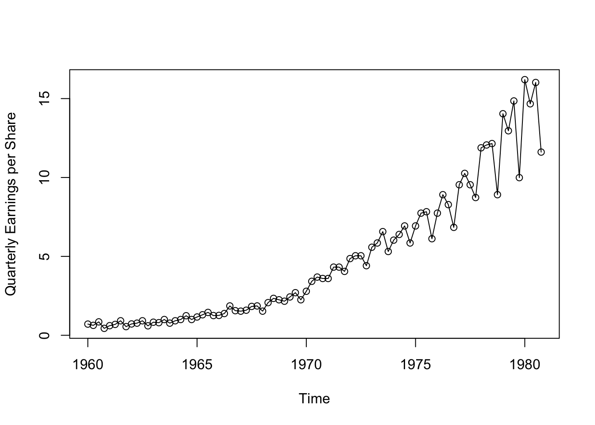
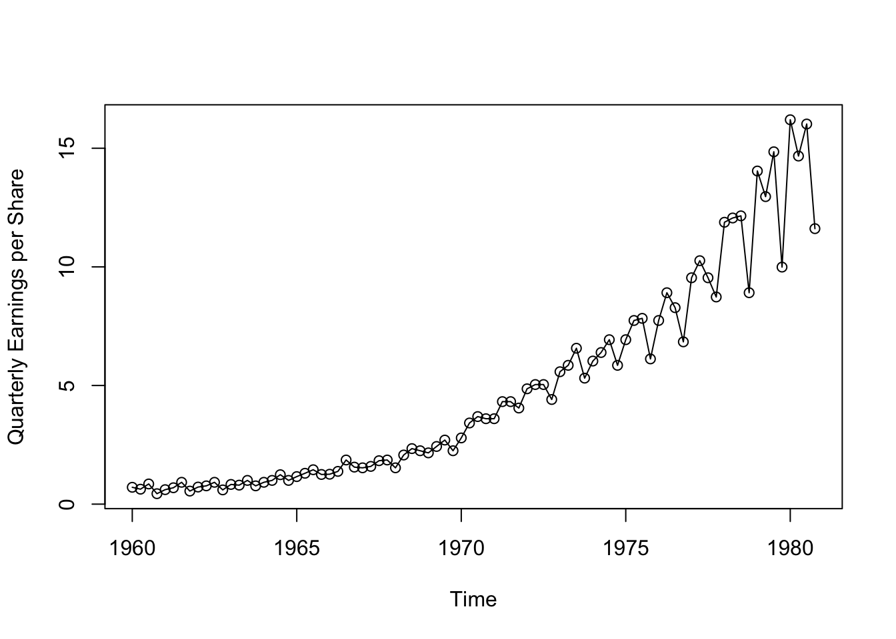
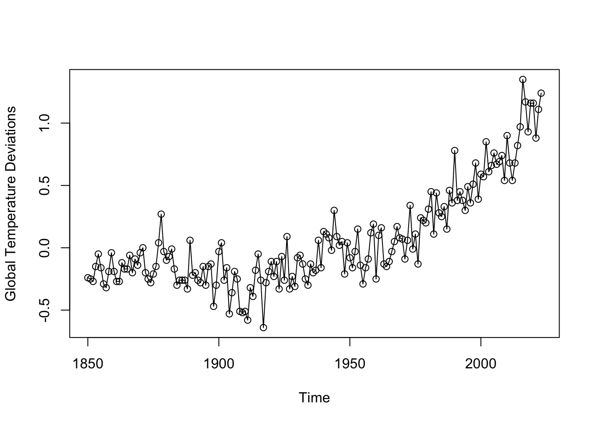
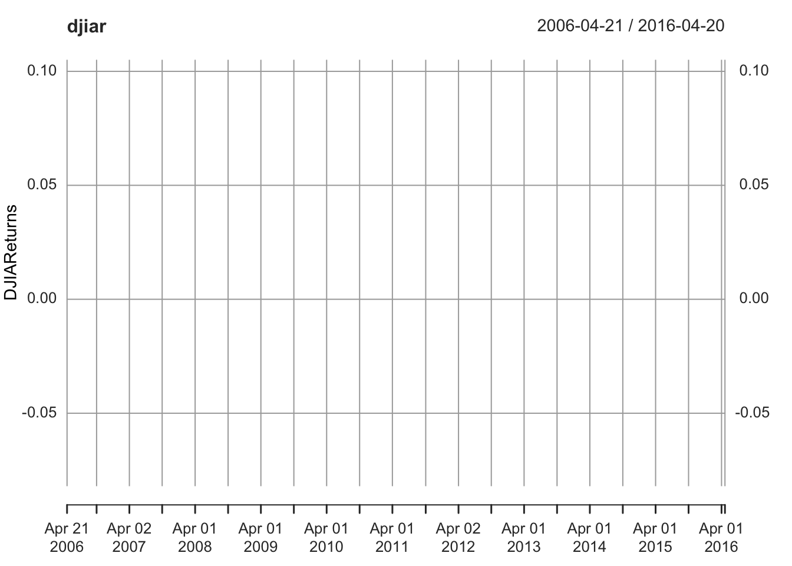
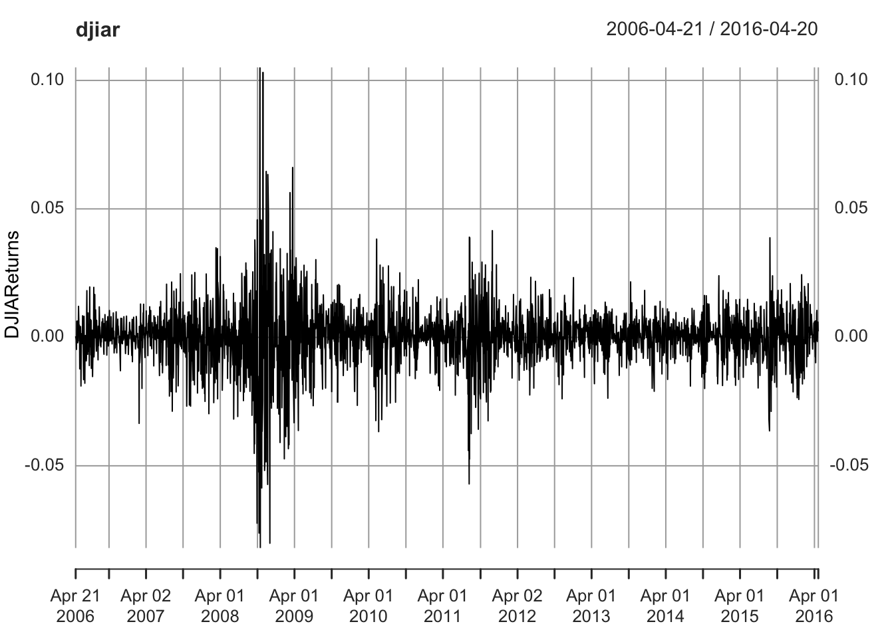
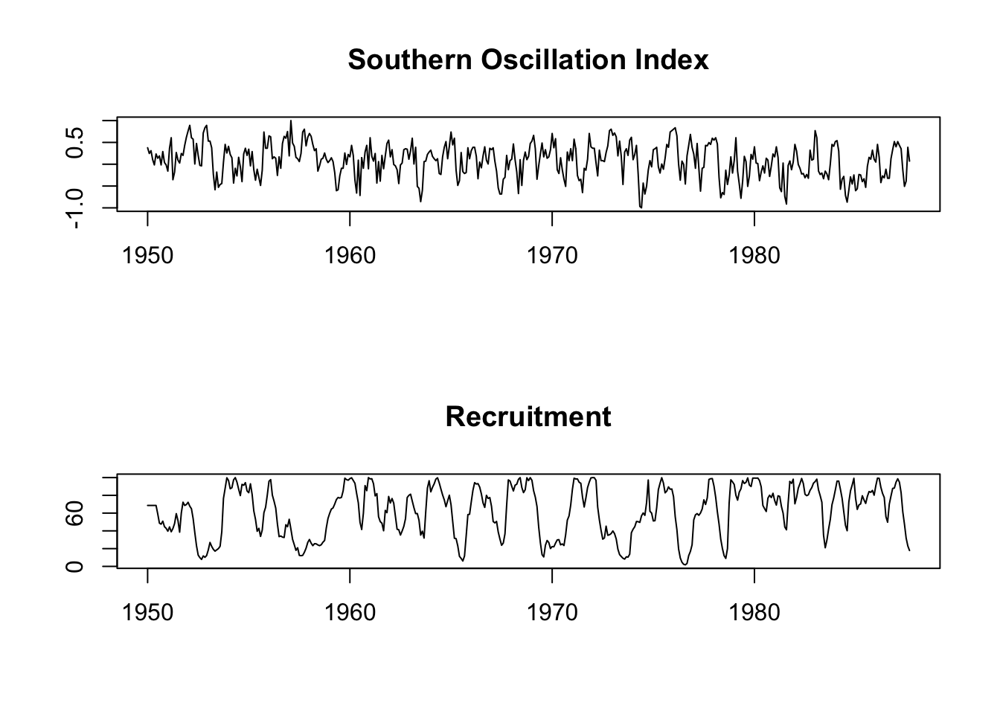
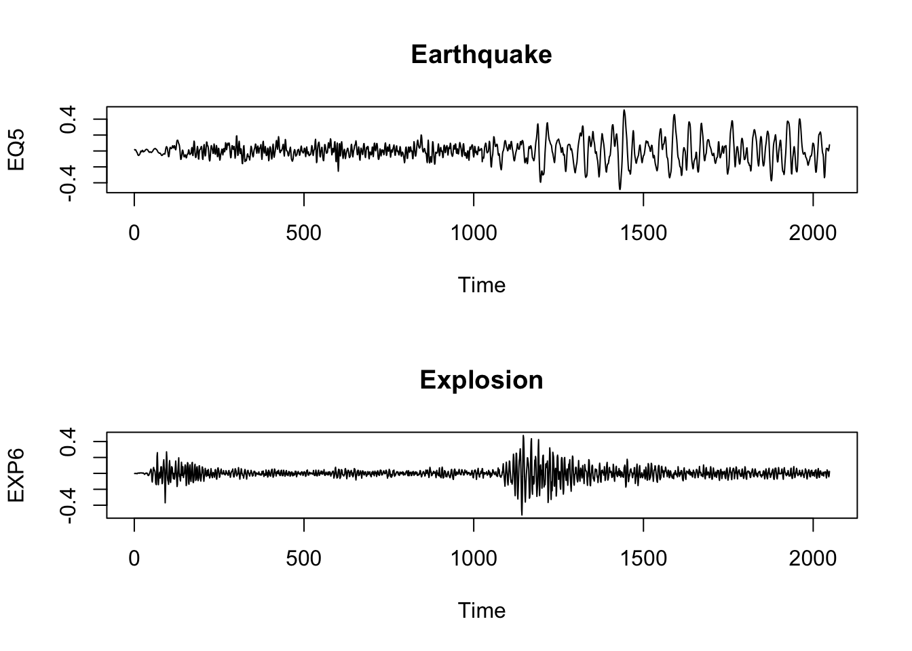
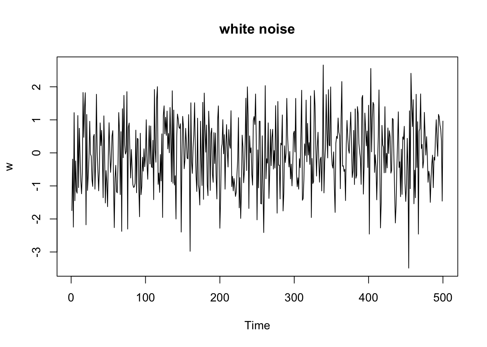
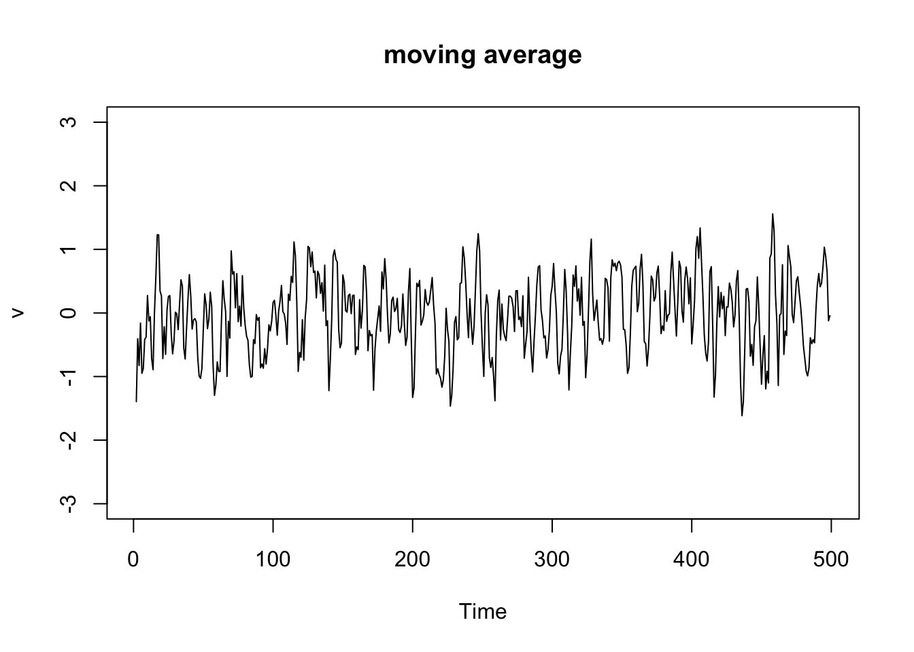

library(astsa)
plot(jj,type="o",ylab="Quarterly Earnings per Share")
library(astsa)
plot(jj,type="o",ylab="Quarterly Earnings per Share")
plot(gtemp_both,type="o",ylab="Global Temperature Deviations")
library(astsa)
library(xts)Loading required package: zoo
Attaching package: 'zoo'The following objects are masked from 'package:base':
as.Date, as.Date.numericdjiar = diff(log(djia$Close))[-1]
plot(djiar,ylab="DJIAReturns",type="n")
lines(djiar)
return: 投资回报率
Lesson: Leave quickly once get some profit
par(mfrow =c(2,1))
plot(soi, ylab="", xlab="", main="Southern Oscillation Index")
plot(rec, ylab="", xlab="", main="Recruitment")
par(mfrow=c(2,1))
ts.plot(fmri1[,2:5], col=1:4, ylab="BOLD", main="Cortex")
ts.plot(fmri1[,6:9], col=1:4, ylab="BOLD", main="Thalamus & Cerebellum")
periodic
# Earthquakes and Explosions
par(mfrow=c(2,1))
plot(EQ5, main="Earthquake")
plot(EXP6, main="Explosion")
Univariate vs Multivariate
Continuous vs Discrete
Stationary vs Non-Stationary
Linear vs Non-Linear
Descriptive Methods
Statistical Time Series Analysis
White noise
w = rnorm(500,0,1) # 500 N(0,1) variates
plot.ts(w, main="white noise")
\(v_t = \frac{1}{3}(w_{t-1}+w_t+w_{t+1})\)
v = filter(w, sides=2, filter=rep(1/3,3)) # moving average
plot.ts(v, ylim=c(-3,3), main="moving average")
Since the Gaussian-Markov assumption (\(E(\epsilon) =0\) and \(\epsilon \sim N\) i.i.d )is so strict, and heteroscedasticity is often observed in the real data, new models were developed after 1970’s.
If \(X\) is a non-negative random variable and \(a>0\), then \[P(X\ge a) \le \frac{E(X)}{a}\] \[ E(X) = \int_{0}^{\infty} x f(x) \, dx \]
\[ E(X) = \int_{0}^{a} x f(x) \, dx + \int_{a}^{\infty} x f(x) \, dx \] \[ \int_{a}^{\infty} x f(x) \, dx \geq \int_{a}^{\infty} a f(x) \, dx = a \int_{a}^{\infty} f(x) \, dx \]
\[ E(X) \geq a \cdot P(X \geq a) \]
\[ P(X \geq a) \leq \frac{E(X)}{a} \]
\[ P((X - \mu)^2 \geq k^2\sigma^2) \leq \frac{E[(X-\mu)^2]}{k^2\sigma^2}=\frac{\sigma^2}{k^2\sigma^2} = \frac{1}{k^2} \]
\[ P(|X - \mu| \geq k\sigma) \leq \frac{1}{k^2} \]
Let \(X_1, X_2, \ldots, X_n\) be a sequence of i.i.d. random variables with finite mean \(\mu\) and finite variance \(\sigma^2\). Then for any \(\epsilon > 0\),
\[ P\left(\left|\frac{1}{n}\sum_{i=1}^{n} X_i - \mu\right| \geq \epsilon\right) \to 0 \text{ as } n \to \infty \]
Let \(X_1, X_2, \ldots, X_n\) be a sequence of i.i.d. random variables with finite mean \(\mu\). Then,
\[ P\left(\lim_{n \to \infty} \frac{1}{n}\sum_{i=1}^{n} X_i = \mu\right) = 1 \]
By Chebyshev’s inequality, for any \(\epsilon > 0\),
\[ P\left(\left|\frac{1}{n}\sum_{i=1}^{n} X_i - \mu\right| \geq \epsilon\right) \leq \frac{\text{Var}\left(\frac{1}{n}\sum_{i=1}^{n} X_i\right)}{\epsilon^2} = \frac{\frac{1}{n^2}\cdot n\sigma^2}{\epsilon^2}=\frac{\sigma^2/n}{\epsilon^2} = \frac{\sigma^2}{n\epsilon^2} \]
As \(n \to \infty\), \(\frac{\sigma^2}{n\epsilon^2} \to 0\). Therefore, \[ P\left(\left|\frac{1}{n}\sum_{i=1}^{n} X_i - \mu\right| \geq \epsilon\right) \to 0 \text{ as } n \to \infty \]
By Chebyshev’s inequality, for any \(\epsilon > 0\),
\[ P\left(\left|\frac{1}{n}\sum_{i=1}^{n} X_i - \mu\right| \geq \epsilon\right) \leq \frac{\sigma^2}{n\epsilon^2} \]
Let \(A_n = \left\{\left|\frac{1}{n}\sum_{i=1}^{n} X_i - \mu\right| \geq \epsilon\right\}\). Then,
\[ \sum_{n=1}^{\infty} P(A_n) \leq \sum_{n=1}^{\infty} \frac{\sigma^2}{n\epsilon^2} = \frac{\sigma^2}{\epsilon^2} \sum_{n=1}^{\infty} \frac{1}{n} \]
The series \(\sum_{n=1}^{\infty} \frac{1}{n}\) diverges, so we cannot directly apply the Borel-Cantelli lemma here. However, we can use a modified approach. Consider the events \(B_k = \left\{\left|\frac{1}{2^k}\sum_{i=1}^{2^k} X_i - \mu\right| \geq \epsilon\right\}\). Then,
\[ \sum_{k=1}^{\infty} P(B_k) \leq \sum_{k=1}^{\infty} \frac{\sigma^2}{2^k\epsilon^2} = \frac{\sigma^2}{\epsilon^2} \sum_{k=1}^{\infty} \frac{1}{2^k} = \frac{\sigma^2}{\epsilon^2} \]
Since \(\sum_{k=1}^{\infty} P(B_k)\) converges, by the Borel-Cantelli lemma(如果一系列独立事件的概率之和是有限的，那么这些事件无限次发生的概率为零), we have
\[ P(B_k \text{ i.o.}) = 0 \]
(i.o means infinitely often)
(p.s.: if 一系列独立事件的概率之和是无限的，并且这些事件是独立的，那么这些事件无限次发生的概率为一)
This implies that \[ P\left(\lim_{k \to \infty} \frac{1}{2^k}\sum_{i=1}^{2^k} X_i = \mu\right) = 1 \]
Now, for any \(n\), there exists a \(k\) such that \(2^k \leq n < 2^{k+1}\). We can write \[ \frac{1}{n}\sum_{i=1}^{n} X_i = \frac{1}{n}\left(\sum_{i=1}^{2^k} X_i + \sum_{i=2^k+1}^{n} X_i\right) \]
As \(k \to \infty\), the second term \(\frac{1}{n}\sum_{i=2^k+1}^{n} X_i\) becomes negligible, and we have \[ \lim_{n \to \infty} \frac{1}{n}\sum_{i=1}^{n} X_i = \mu \]
with probability 1. Therefore,
\[ P\left(\lim_{n \to \infty} \frac{1}{n}\sum_{i=1}^{n} X_i = \mu\right) = 1 \]
The entropy of a discrete random variable \(X\) with probability mass function \(P(X)\) is defined as:
\[ H(X) = -\sum_{x} P(x) \log(P(x)) \]
The Kullback-Leibler (KL) divergence is a measure of how one probability distribution diverges from a second, expected probability distribution. It is defined as follows:
For discrete probability distributions \(P\) and \(Q\) defined on the same probability space, the KL divergence from \(Q\) to \(P\) is given by:
\[ D_{KL}(P || Q) = \sum_{x} P(x) \log\left(\frac{P(x)}{Q(x)}\right)=\sum_x P(x) \frac{1}{\log(Q(x))} - \sum_x P(x) \frac{1}{\log(P(x))}\\ = H(P,Q) -H(P) \] P(x) is the true distribution, Q(x) is the approximating distribution (proposed p.d.f)
For continuous probability distributions, the KL divergence is defined as:
\[ D_{KL}(P || Q) = \int_{-\infty}^{\infty} p(x) \log\left(\frac{p(x)}{q(x)}\right) dx \]
where \(p(x)\) and \(q(x)\) are the probability density functions of \(P\) and \(Q\), respectively.
example
disadvantage: we do not the true distribution P(x)
By Akaike (1974), although the true distribution \(P(x)\) is unknown, we can use the maximum likelihood estimate (MLE) to approximate it. The AIC is derived from an estimate of the KL divergence between the true model and a candidate model.
AIC is defined as:
\[ AIC = -2 \log(L) + 2k \]
AICc is a corrected version of AIC that adjusts for small sample sizes. It is defined as:
\[ AICc = AIC + \frac{2k(k+1)}{n-k-1} \]
when n goes to infinity, AICc converges to AIC.
\[ P(A|B) = \frac{P(B|A)P(A)}{P(B)} \]
A goes to \(\theta\), B goes to x
\[ \hat \theta = \arg\max_{\theta} P(\theta|x) = \arg\max_{\theta} \frac{P(x|\theta)P(\theta)}{P(x)} = \arg\max_{\theta} P(x|\theta)P(\theta) \]
\[ BIC = -2 \log(L) + k \log(n) \]
loglikelihood penalized by the number of parameters and the sample size
loglikelihood could be replaced by the loss function
BIC is more popular used in high-dimensional data analysis. If not in high-dimensional data analysis, AIC and BIC values are similar.
https://harvard-iacs.github.io/2018-CS109A/a-sections/a-section-2/presentation/a-sec2-MLEtoAIC.pdf
stationary
$x_1,
\(e^x = \sum_{n=0}^{\infty} \frac{x^n}{n!}\) 多项式逼近
B-spline
非参–也有不好的方面
拿到数据，想要估计，选择哪个kernel function都可以，只是估计效率的问题，结果差不多，尤其是对于小样本